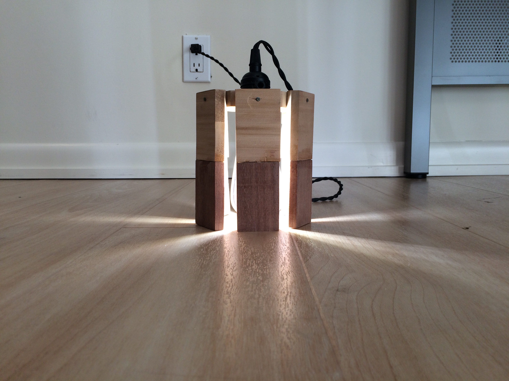
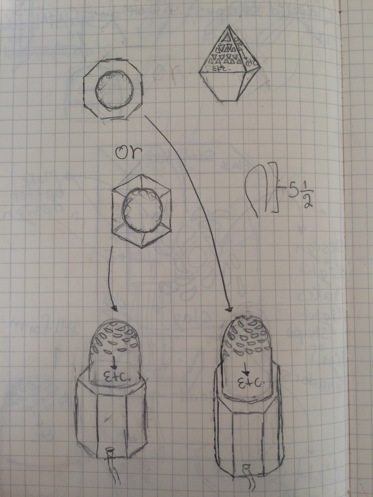
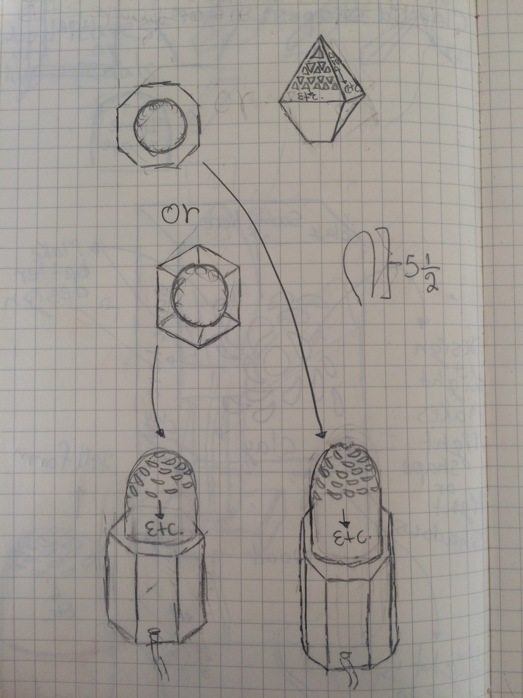

New Project
I have found myself deeply interested in both fashion and music these past months; so for my innovation lab project I which to pursue both of them, however not as a project but more as a skill (I like to call this “Skill learning”. For the music side of this trimesters “Skill learning” I wish to learn how to record, produce, mix, sample, and use either Logic Pro and or Fruityloops. For the fashion side of this trimesters “Skill learning” I will learn how to sketch clothing designs, make a design with photoshop or adobe premiere, and hopefully make garments which I can then sell on a website I made, or grailed.
Below are the teachers I would be working with and the steps I want to take in order to learn these new skills
Music Production: Paul and Doc. Wilson
- How to use audacity, fruity loops, GarageBand, etc.
- How to produce and sample (Beat making)
- Learn how to write a song (Lyrics) and make it sound good with the beat
- Learn to to record and out it into the program
- How to market and promote your music and form a LP, EP, mixtape and or album
Fashion Industry: Mulhern, Kieran, and Doc. Wilson
- How to sketch a clothing design and color it
- How to do the design on photoshop and or adobe illustrator
- How to find the correct products to use and or clothing manufacturing companies How to screen-print
- How to screen-print
- How to market products and use social media platforms to help promote products
- How to make a website in order to sell products
Disability/disadvantages Module
We did a module which deals with disabilities and disadvantages. Our assignment was to choose a disabilities or disadvantage and come up with an invention that would help improve the lives of the people with those said disabilities or disadvantages. I chose pregnancy. What I did first was think of a problem the comes with being pregnant. I then realized that many women when pregnant have a problem with their diet and this can be because of cravings, the fact that they have so much going on that they don’t think about what they eat, and or a variety of other reasons. So what I thought about doing was and app which has notifications so that during specific times of the day it gives its user alerts on when they should eat and what they should eat. For example if they need to lunch at 1pm, they would get an alert/notification at 12pm saying that they should eat lunch at 1 and what they should eat, as well as why they should eat those things. This keeps the mother's and child's diet on a schedule and makes sure that the mom and the child are getting the nutrients/vitamins they need. The app also has recipes with their meals and talks about why you would be eating these foods. I had to do background research on the target demographic (Pregnant people) and make a persona for my project before I made my app. Then, after I made my design for my project I had to make a presentation on it.
Lamp Module
Thanks to the lamp project, I learned many new skills, such as soldering woodworking, metalworking, etc. There were various complications throughout the whole process which changed my end product (The lamp did not come out as I originally planned it). In my original design there were diming features, the lamp was easily portable and meant to be placed on a surface; But thats not how the final design came out. The final product has gaps between its walls, hangs from a ceiling, and has no diming features. My lamp did not come out how I originally planned but I am happy with how it came out. I now Have to clean it up a bit and sand off the excess glue.
In ilab our current module is designing and creating a lamp. The inspiration for my lamp is lighthouses. My lamps is very simple compared to my fellow alumni but it is still elegant thanks to its octagonal shape and the two woods that go into it, which makes the colors pop. In my lamp I am incorperating woodworking, saudering and metalwork. The hardest part of the project so far has been drilling into the wood evenly so that all 16 pieces of wood can fit together perfectly.
 

Screen Printing Project Description
For the first trimester of Ilab I will be working on screenprinting. I want to learn how to screenprint because I have many clothing ideas and just knowing how to screenprint is a very intresting skill. Another reason I want to learn how to screenprint is to start my own clothing line and potentially company. I will first screenprint on a t-shirt and then move on to more complex garments. I will use a vector program such as adobe premiere and or photoshop in order to make a graphic design to screenprint. I believe this will be the hardest part of my screenprinting process because I have no real prior expierience on adobe suite.
10/23/17
This week I ordered my 2 t-shirts, blue and red screenprinting ink, photo emulsion and sensitizer. This week I went designed many breand names and logos by hand and used different fonts online in order to help design my intial logo. After finding a font I liked online I screenshoted it and put it into photoshop where I remade/retouched it and turned it into a vector so that I could print it any size I want and screenprint it. Using photoshop was really hard for me because I had no real prior expirience on it but luckily a fellow classmate helped and taught me.
10/16/17
Supplies
- Transparencies with art on it
- Squeegee
- Frame
- Emulsion
- Sensitizer
- Glass
- Ink
Steps
- Add water to sensitizer then mix it with the emulsion
- Pour small amount onto screen
- Use squeegee until ink is spread evenly on the screen
- Dry emulsion in the dark
- When dry, put artwork backwards on the back of the screen
- Tape art in place then put glass on it
- Put a very bright light on it for 30-45min or outside while the sun is out (But it does not work as well)
- Use a little water and soft toothbrush to take off the unexposed emulsion
- Use hose but be very careful
- Iron shirt and then layout
- Place design were it should be printed
- Put ink over the design and put especially a lot were there is more to fill
- Use squeegee to spread the ink and make it even
- Clean off the ink from the screen
- Throw shirt in dryer for 5 min.
- Clean screen with emulsion remover
- Spread small amount on the sides of the screen
- Hose to wash out the emulsion until the screen is clean (Hose gently)
Tips
- Check dpi (Dots per inch) more dpi=better detail
- Clamp down frame so you can evenly use the squeegee
- Cover print until dry so it does not get messed up (Can use a fan and must be in the dark)
- If material is dark use super opaque for a brighter print